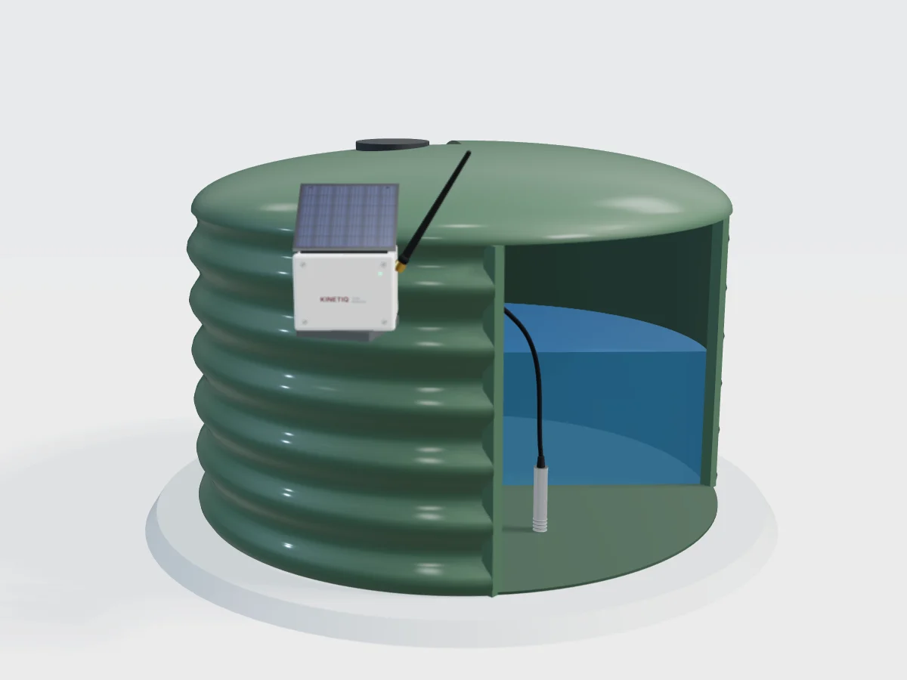
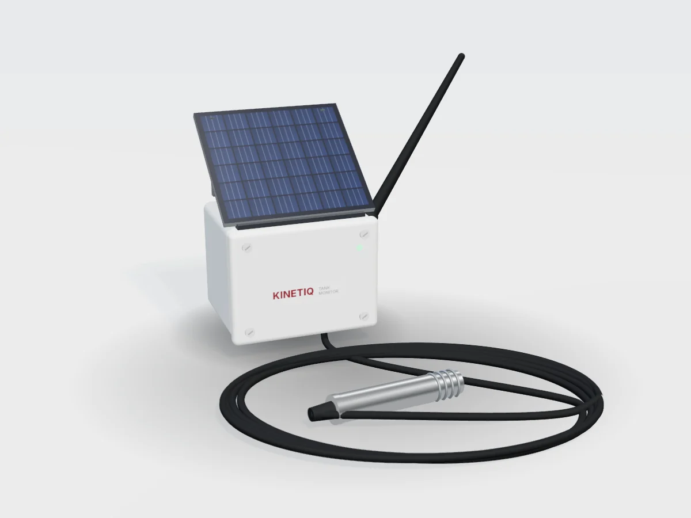
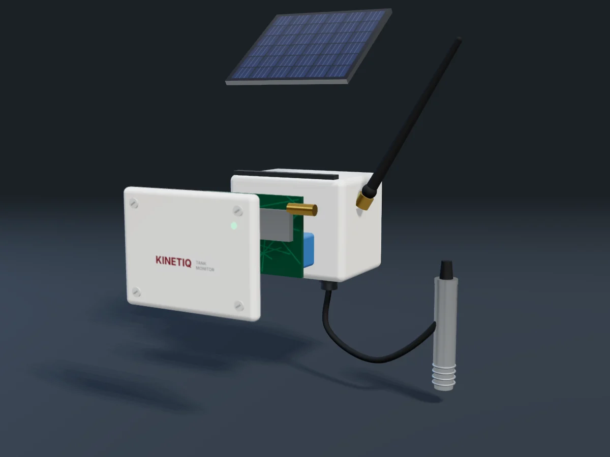

Design A
Installed on a steel farm tank
Dark, dramatic and technical. The cut-away shows the probe sitting on the tank floor. Suits the homepage hero.
Render options
Four 3D designs based on your prototype photo. Each one rotates; drag it to turn it yourself. Tell us which you like for the homepage and the product page.
Dark, dramatic and technical. The cut-away shows the probe sitting on the tank floor. Suits the homepage hero.

Lighter and more homely. Speaks to lifestyle blocks and rural homes.

The unit, cable and probe laid out like your photo. Clean and clear for the product page.

Solar panel, enclosure, circuit board, battery and probe pulled apart. Shows the engineering inside.